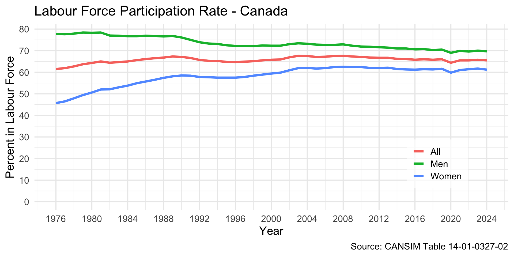
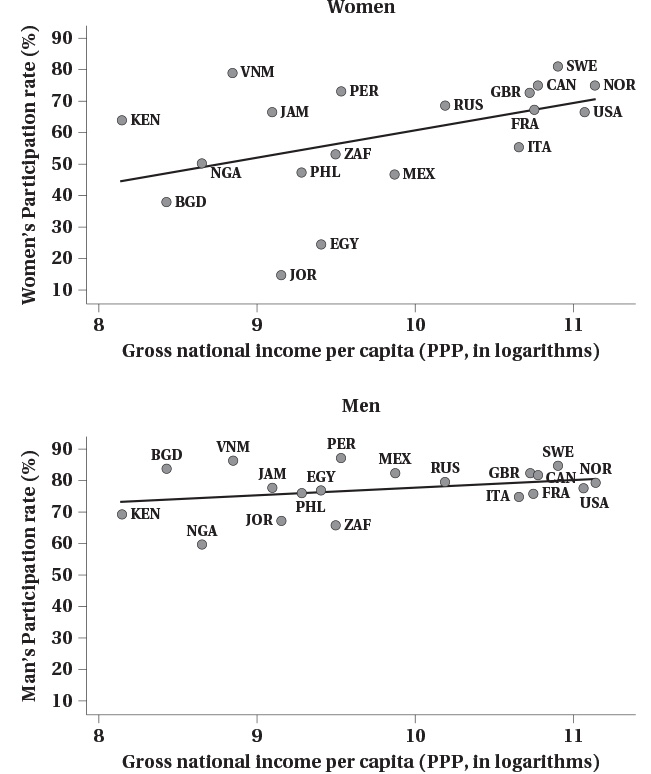
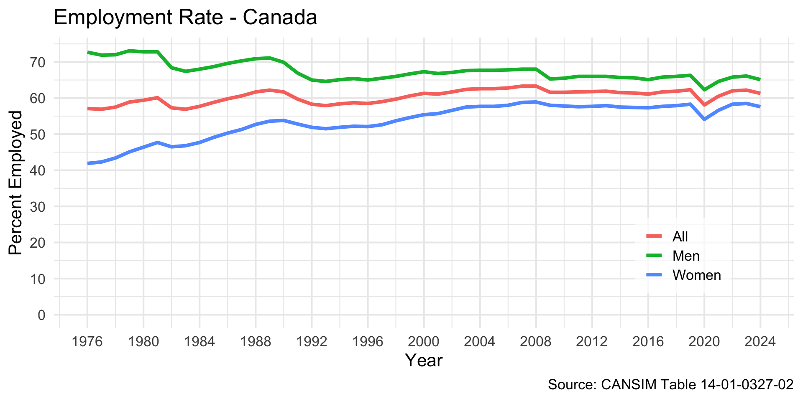
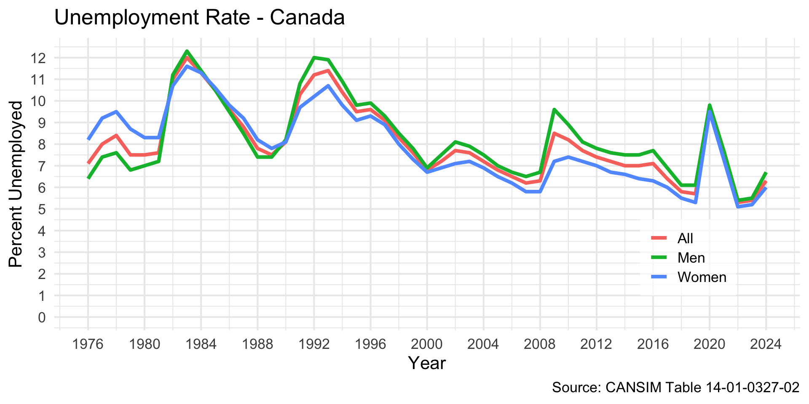
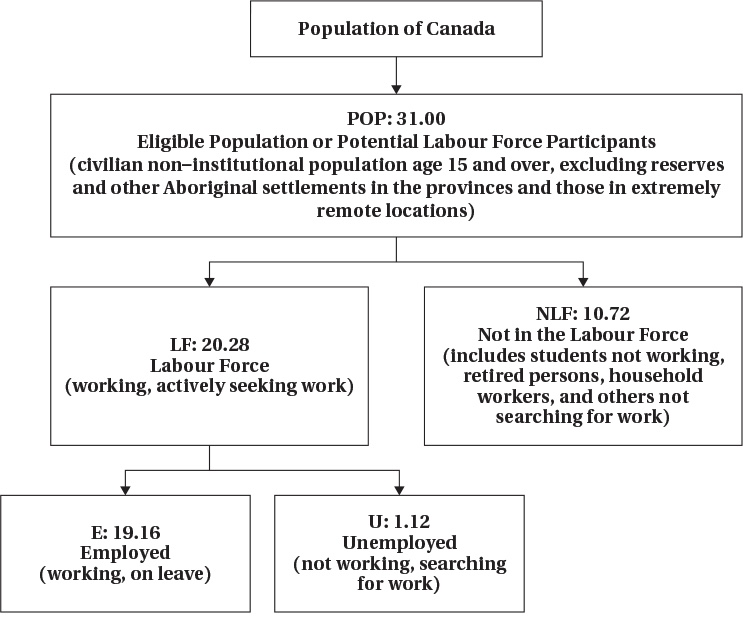
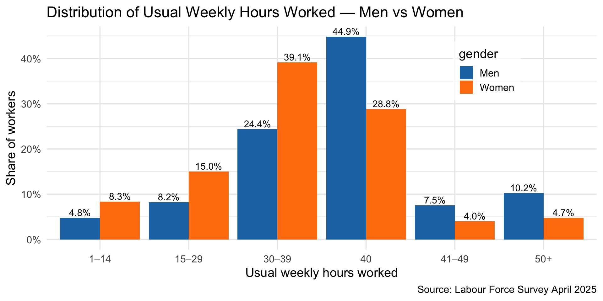
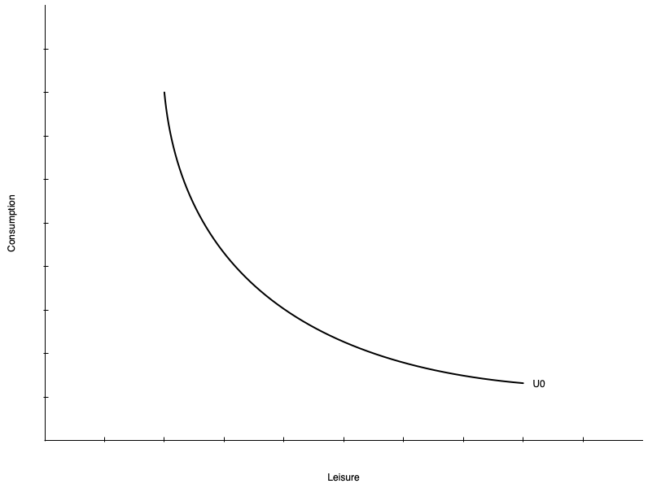

Labour Supply 1: Individual Attachment to the Labour Market
EC306- Wages and Employment
Justin Smith
Wilfrid Laurier University
Fall 2025

Goals of This Section
Goals of This Section
Introduce common labour market concepts
Build the labour supply model
Derive labour supply curve
Examine effects of labour market policies within that model
Key Labour Force Concepts
Introduction
The labour market involves several individual decisions about work
- It is not simply whether to work or not
In the news you hear about statistics that quantify these decisions
In this section we cover the most common ones
Labour Force Participation
The first decision is whether to make yourself available for work
Labour Force: people in the eligible population who participate in labour market activities as either employed or unemployed
- A measure of the people that could work or are working
Eligible population includes
Population 15 years and over
Non-institutionalized
People not living on reserve
Civilians (non-military)
Labour Force Participation
Eligible people who are not part of the labour force include
Retired people
People who do only unpaid work in the home
Full time students (who are 15 years old and over)
People who just give up on looking for work
Labour Force Participation Rate (LFPR): The share of the eligible population (POP) in the labour force (LF)
\[ LFPR = LF/POP \]
- The LFPR is a common statistic reported in the news
Labour Force Participation

Labour Force Participation

Employment and Unemployment
People in the labour force are either employed or unemployed
Employed (E): people who worked during the reference period
- Includes people normally employed but temporarily absent
Unemployed (U): people who did not work during the reference period but
- were available for work and actively looked for work in the past four weeks
- were waiting to start a new job within the next four weeks
- on temporary layoff and expecting to be recalled to that job
The employment rate (ER) and unemployment rate (UR) are
\[ER = E/POP\] \[UR = U/LF\]
Employment and Unemployment

Employment and Unemployment

Labour Force Hierarchy

Hours Worked
Individuals decide not only whether to work or not, but how intensively
Some people work full time, some work part time
Work arrangements can be flexible
“Gig” jobs and remote work have increased that flexibility
Recent data show
Almost half of men work full time hours
About 1/4 of women work full time hours
Hours Worked

Labour Supply Model
Introduction
In this section we introduce a model we use throughout the course
The model helps us understand how individuals make decisions about work
Based on utility maximization as you saw in EC270
Individual choose between two goods
- Consumption of goods and services
- Leisure
Choices are constrained by time, wage rate, and non-labour income
There are a few wrinkles that make this market unique
Preferences
Individuals have preferences over consumption (C) and leisure (L)
People like consuming goods and services
Also like having non-work time
- Includes fun activities but also non-work tasks like chores, education, etc.
The tradeoffs people are willing to make between C and L are represented by indifference curves
- At every point along the curve the individual is equally happy
- Curves further from the origin represent higher levels of utility
Preferences

On the left is a single indifference curve
Any point represents equal utility (\(U_{0}\))
Marginal Rate of Substitution (MRS): the rate at which a person is willing to trade consumption for leisure while remaining equally happy
The MRS is the slope of the indifference curve at a point
Individuals have diminishing MRS
- Willing to give up less consumption for additional leisure the more leisure they already have